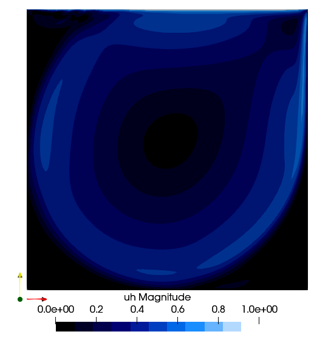

Lid Driven Cavity Flow

The Lid Driven Cavity flow is another standard case. It is a box of 1x1 dimension with the top side that can slide. The user can set different Reynolds.
using PartitionedArrays
using SegregatedVMSSolver
using SegregatedVMSSolver.ParametersDef
using SegregatedVMSSolver.SolverOptions
t0 =0.0
dt = 0.1
tF = 30.0
t_endramp=2.0
Re = 1000
D = 2
rank_partition = (2,2)
sprob = StabilizedProblem(method=VMS(2), coeff_method=ScalarFormulation())
timep = TimeParameters(t0=t0,dt=dt,tF=tF, t_endramp=t_endramp)
physicalp = PhysicalParameters(Re=Re)
solverp = SolverParameters()
exportp = ExportParameters(printinitial=false,printmodel=false)
meshp= MeshParameters(rank_partition,D;N=32,L=0.5)
simparams = SimulationParameters(timep,physicalp,solverp,exportp)
mcase = LidDriven(meshp,simparams,sprob)
SegregatedVMSSolver.solve(mcase,with_debug)
Results
The reference values are from [3]  { width=50% }
{ width=50% }